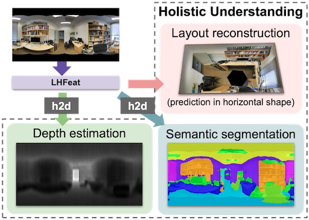

Cheng Sun, Min Sun, Hwann-Tzong Chen
IEEE Conference on Computer Vision and Pattern Recognition (CVPR), 2021
Cheng Sun, Min Sun, Hwann-Tzong Chen
IEEE Conference on Computer Vision and Pattern Recognition (CVPR), 2021
Cheng Sun, Chi-Wei Hsiao, Ning-Hsu Wang , Min Sun, Hwann-Tzong Chen
IEEE Conference on Computer Vision and Pattern Recognition (CVPR Oral), 2021
Shih-Han Chou, Cheng Sun, Wen-Yen Chang, Wan-Ting Hsu, Min Sun, Jianlong Fu
IEEE Winter Conference on Applications of Computer Vision (WACV), 2020
Chi-Wei Hsiao, Cheng Sun, Min Sun, Hwann-Tzong Chen
Cheng Sun, Chi-Wei Hsiao, Min Sun, Hwann-Tzong Chen
IEEE Conference on Computer Vision and Pattern Recognition (CVPR), 2019
[Paper] [Codes] [Project Page]
Invited spotlight presentation at 3D Scene Generation Workshop.
Invited student presentation at Augmented Intelligence and Interaction (AII) Workshop.
Meng-Li Shih, Yi-Chun Chen, Chia-Yu Tung, Cheng Sun, Ching-Ju Cheng, Liwei Chan, Srenivas Varadarajan, Min Sun
IEEE/RSJ International Conference on Intelligent Robots and Systems (IROS), 2018
2020 Sep - Now
2018 Sep - 2020 Aug
GPA – 4.28 (0~4.3 scale)
2014 Sep - 2018 Feb
GPA – 87.66 (0~100 scale, ranked 3rd in class)
2017 July - 2017 August
2015 July - 2017 March
Implement website for SITCON CAMP 2015, SITCON 2016, SITCON 2017 and COSCUP 2016.
I were enthusiastic about GO game and played until senior high school, achieving amateur 2 dan. I will play GO again if I have more leisure time in the future.
I played ACM International Collegiate Programming Contest (ACM-ICPC) and competitive programming when I was undergrade. The competitors are asked to solve 5 to 13 problems in 3 to 5 hours using algorithm, data structure and their problem solving skill. Our team use C/C++ and achieved 8th place in 2016 Taiwan regional and 9th Place in 2016 Korean Regional. Add me as codeforces friend.